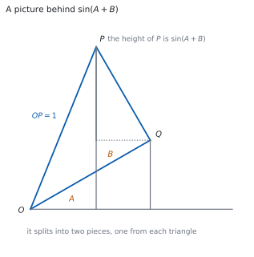
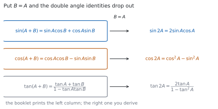

HL 3.10 — Compound angle identities and the double angle identity for \(\tan\)（加法定理と \(2\) 倍角）
- 加法定理（compound angle identities）を公式集から正しく写せる。
- \(\pm\) と \(\mp\) の複号の読み方が分かる。
- \(\dfrac{\pi}{12}\) のような角の正確な値を出せる。
- 加法定理に \(B = A\) を入れて、\(2\) 倍角の公式を導ける。
- \(\tan 2\theta\) の公式を使える。
- 加法定理を使って、恒等式を示せる。
- \(2\) 倍角を含む三角方程式を解ける。
The idea
1. The compound angle identities（加法定理）

シラバスは、\(2\) 行だけです。
Compound angle identities.
Double angle identity for tan.
\(2\) つの角の和や差の三角比を、それぞれの三角比で表す式です。公式集の 3.10 の欄に、次の形で印刷されています。
Compound angle identities
\(\sin(A \pm B) = \sin A\cos B \pm \cos A\sin B\)
\(\cos(A \pm B) = \cos A\cos B \mp \sin A\sin B\)
\(\tan(A \pm B) = \dfrac{\tan A \pm \tan B}{1 \mp \tan A\tan B}\)
覚える必要はありません。 大事なのは、複号の読み方（第 2 節）と、どこで使うかです。
図 1 は、\(\sin(A+B)\) を図で見たものです。\(P\) の高さが \(\sin(A+B)\) で、それが \(2\) つの三角形からの高さに分かれます。
いちばん多いまちがいです。\(\sin\) は「かっこの中をそのまま分けられる」関数ではありません。
\(A = B = \dfrac{\pi}{2}\) で試すと、\(\sin\pi = 0\) ですが \(\sin\dfrac{\pi}{2}+\sin\dfrac{\pi}{2} = 2\) です。まったく違います。
2. Reading the \(\pm\) and \(\mp\) signs（複号の読み方）
公式集の式には、\(\pm\)（上が \(+\)）と \(\mp\)（上が \(-\)）が出てきます。上どうし・下どうしで読みます。
| 左辺 | 右辺 |
|---|---|
| \(\cos(A+B)\) | \(\cos A\cos B - \sin A\sin B\) |
| \(\cos(A-B)\) | \(\cos A\cos B + \sin A\sin B\) |
\(\cos\) では、符号が逆になります。 足し算のほうに \(-\)、引き算のほうに \(+\) が付きます。
\(\sin\) のほうは、そのままです。
\[ \sin(A+B) = \sin A\cos B + \cos A\sin B \tag{1}\]
\[ \cos(A+B) = \cos A\cos B - \sin A\sin B \tag{2}\]
\(\cos\pi = -1\) です。\(\cos(A+B) = \cos A\cos B - \sin A\sin B\) に入れると \(0 - 1 = -1\) ✓ 符号が合っています。
\(+\) にしてしまうと \(0+1 = 1\) で、合いません。\(30\) 秒で確かめられます。
3. Exact values for new angles（新しい角の正確な値）
\(\dfrac{\pi}{12}\)（\(15^{\circ}\)）のような角は、知っている角の和や差に書き直せます。
\[ \frac{\pi}{12} = \frac{\pi}{3} - \frac{\pi}{4} \]
なので
\[ \cos\frac{\pi}{12} = \cos\frac{\pi}{3}\cos\frac{\pi}{4} + \sin\frac{\pi}{3}\sin\frac{\pi}{4} = \frac{1}{2}\cdot\frac{\sqrt{2}}{2} + \frac{\sqrt{3}}{2}\cdot\frac{\sqrt{2}}{2} = \frac{\sqrt{2}+\sqrt{6}}{4} \]
です。\(\cos\) の差なので、右辺は \(+\) です（第 2 節）。
使える角は \(\dfrac{\pi}{6}\)、\(\dfrac{\pi}{4}\)、\(\dfrac{\pi}{3}\)、\(\dfrac{\pi}{2}\) です（SL 3.5）。この \(4\) つの和や差で書ける角なら、正確な値が出せます。
4. Deriving the double angle identities（\(2\) 倍角を導く）

Guidance は、次のように書いています。
Derivation of double angle identities from compound angle identities.
\(2\) 倍角の公式は、加法定理に \(B = A\) を入れるだけで出ます。図 2 のとおりです。
式 1 で \(B = A\) とすると
\[ \sin 2A = \sin A\cos A + \cos A\sin A = 2\sin A\cos A \tag{3}\]
式 2 で \(B = A\) とすると
\[ \cos 2A = \cos^{2}A - \sin^{2}A \tag{4}\]
この \(2\) つは、公式集の 3.6 の欄にもあります（SL の範囲です）。\(\cos 2A\) には、\(\cos^{2}A + \sin^{2}A = 1\) を使った書きかえが \(2\) つあります。
\[ \cos 2A = 2\cos^{2}A - 1 = 1 - 2\sin^{2}A \tag{5}\]
方程式に\(\sin\) だけが残ってほしいときは \(1-2\sin^{2}A\)、\(\cos\) だけが残ってほしいときは \(2\cos^{2}A-1\) を選びます（第 7 節）。
選び方を先に決めると、途中で行きづまりません。
5. The double angle identity for \(\tan\)（\(\tan\) の \(2\) 倍角）
\(\tan\) の \(2\) 倍角だけは、HL の範囲です。公式集の 3.10 の欄にあります。
Double angle identity for tan
\(\tan 2\theta = \dfrac{2\tan\theta}{1 - \tan^{2}\theta}\)
\[ \tan 2\theta = \frac{2\tan\theta}{1-\tan^{2}\theta} \tag{6}\]
これも、\(\tan(A+B)\) に \(B = A\) を入れて出ます。
分母が \(0\) になる \(\theta\) では使えません。 \(\tan^{2}\theta = 1\)、つまり \(\theta = \dfrac{\pi}{4} + \dfrac{k\pi}{2}\) のときです。そこでは \(\tan 2\theta\) に値がありません。
6. Proving identities（恒等式を示す）
Show that の問題では、左辺から始めて右辺にたどり着きます（SL 1.6）。
\[ \cos 3\theta = \cos(2\theta + \theta) \]
のように、大きい角を \(2\) つに割るのが定石です。あとは加法定理と \(2\) 倍角でほどきます（演習 9）。
シラバスは、複素数とのつながりも書いています。
Link to: De Moivre’s theorem (AHL1.14).
De Moivre の定理からも、同じ式が出ます（HL 1.14）。\((\cos\theta+i\sin\theta)^{2}\) を展開して実部と虚部をくらべると、\(2\) 倍角の \(2\) つの式が同時に出ます。
7. Solving equations with a double angle（\(2\) 倍角を含む方程式）
\(\cos 2\theta\) と \(\sin\theta\) が混ざった方程式は、角をそろえてから解きます。
\[ \cos 2\theta + 3\sin\theta = 2 \]
\(\sin\) だけにしたいので、式 5 の \(1-2\sin^{2}\theta\) を使います。
\[ 1 - 2\sin^{2}\theta + 3\sin\theta = 2 \ \Rightarrow \ 2\sin^{2}\theta - 3\sin\theta + 1 = 0 \]
\[ (2\sin\theta - 1)(\sin\theta - 1) = 0 \]
\(\sin\theta\) の \(2\) 次方程式になりました。\(\sin\theta = \dfrac{1}{2}\) または \(\sin\theta = 1\) です。
\[ \text{角をそろえる} \to \text{$1$ 種類の三角比の $2$ 次方程式にする} \tag{7}\]
TI-Nspire CX II の Graphs ページに、左辺と右辺の \(2\) つを入れて menu → Analyze Graph → Intersection を使うと、交点から解が読めます。
範囲の指定に気をつけてください。 \(0 \leq \theta \leq 2\pi\) なら、Window Settings で \(x\) の範囲をその通りにします。そうしないと、範囲外の解まで拾ってしまいます。
恒等式の確かめにも使えます。\(y_{1}\) に左辺、\(y_{2}\) に右辺を入れて、\(2\) 本のグラフが重なれば、まず合っています。
Paper 1 では使えません。 このページの例題と演習は、すべて手で解けるようにしてあります。
Why it works
\(\sin(A+B)\) を図で見る
図 1 で、\(OP = 1\)、角 \(AOQ = A\)、角 \(QOP = B\)、角 \(OQP\) は直角とします。
直角三角形 \(OQP\) から \(OQ = \cos B\)、\(QP = \sin B\) です。
\(P\) の高さ（\(x\) 軸からの距離）が \(\sin(A+B)\) です。これを \(2\) つに分けます。
- \(Q\) の高さは \(OQ\sin A = \cos B\sin A\)
- \(Q\) から \(P\) までの高さの差は \(QP\cos A = \sin B\cos A\)
足すと
\[ \sin(A+B) = \sin A\cos B + \cos A\sin B \]
です。\(A\) と \(B\) が鋭角で、\(A+B\) が鋭角のときの図です。 すべての角で成り立つことは、単位円や複素数を使って示します。
\(\tan\) の加法定理は、割り算から出ます
\(\tan(A+B) = \dfrac{\sin(A+B)}{\cos(A+B)}\) に、式 1 と 式 2 を入れます。
\[ \tan(A+B) = \frac{\sin A\cos B + \cos A\sin B}{\cos A\cos B - \sin A\sin B} \]
分子と分母を \(\cos A\cos B\) で割ります（どちらも \(0\) でないとします）。
\[ = \frac{\dfrac{\sin A}{\cos A} + \dfrac{\sin B}{\cos B}}{1 - \dfrac{\sin A}{\cos A}\cdot\dfrac{\sin B}{\cos B}} = \frac{\tan A + \tan B}{1 - \tan A\tan B} \]
です（演習 8）。\(\cos A\cos B\) で割るところが、この導出の要です。
\(\cos 2A\) の \(3\) つの形
式 4 は \(\cos^{2}A - \sin^{2}A\) でした。ここに \(\sin^{2}A = 1 - \cos^{2}A\) を入れると
\[ \cos 2A = \cos^{2}A - \left(1-\cos^{2}A\right) = 2\cos^{2}A - 1 \]
です。\(\cos^{2}A = 1 - \sin^{2}A\) を入れると
\[ \cos 2A = \left(1-\sin^{2}A\right) - \sin^{2}A = 1 - 2\sin^{2}A \]
です。\(3\) つは同じ式で、見た目だけが違います。
De Moivre の定理とのつながり
\((\cos\theta + i\sin\theta)^{2}\) を、\(2\) 通りに計算します。
展開すると
\[ \cos^{2}\theta + 2i\cos\theta\sin\theta + i^{2}\sin^{2}\theta = \left(\cos^{2}\theta - \sin^{2}\theta\right) + i\left(2\sin\theta\cos\theta\right) \]
De Moivre の定理を使うと（HL 1.14）
\[ (\cos\theta+i\sin\theta)^{2} = \cos 2\theta + i\sin 2\theta \]
です。実部どうし・虚部どうしをくらべると、式 4 と 式 3 が同時に出ます。
\(3\) 乗にすれば \(3\) 倍角が出ます。 同じやり方が、何倍角でも使えます（演習 9）。
Worked examples
問題文は英語です。意味が理解できなかったら、問題文の下の「日本語訳」を開いてください。解説は日本語です。
例題も演習も、すべて電卓なしで解けます。 Paper 1 のつもりで解いてください。
例題 1 Find the exact value of \(\cos\dfrac{\pi}{12}\).
日本語訳
\(\cos\dfrac{\pi}{12}\) の正確な値を求めなさい。
知っている角の差に書き直します（第 3 節）。
\[ \frac{\pi}{12} = \frac{4\pi - 3\pi}{12} = \frac{\pi}{3} - \frac{\pi}{4} \]
\(\cos(A-B)\) なので、右辺は \(+\) です（第 2 節）。
\[ \cos\frac{\pi}{12} = \cos\frac{\pi}{3}\cos\frac{\pi}{4} + \sin\frac{\pi}{3}\sin\frac{\pi}{4} \]
\[ = \frac{1}{2}\cdot\frac{\sqrt{2}}{2} + \frac{\sqrt{3}}{2}\cdot\frac{\sqrt{2}}{2} = \frac{\sqrt{2}}{4} + \frac{\sqrt{6}}{4} = \frac{\sqrt{2}+\sqrt{6}}{4} \]
検算。 大きさを見ます。 \(\sqrt{2} \approx 1.41\)、\(\sqrt{6} \approx 2.45\) なので、答えは約 \(\dfrac{3.86}{4} \approx 0.97\) です。\(\dfrac{\pi}{12}\) は小さい角なので、\(\cos\) は \(1\) に近いはずです ✓
検算（符号のほう）。 \(A = B\) として \(\cos 0 = 1\) で試します。\(\cos^{2}A + \sin^{2}A = 1\) ✓ \(+\) で合っています。 \(-\) だと \(\cos 2A\) になってしまいます。
\[\frac{\pi}{12} = \frac{\pi}{3}-\frac{\pi}{4}\]
\[\cos\frac{\pi}{12} = \cos\frac{\pi}{3}\cos\frac{\pi}{4}+\sin\frac{\pi}{3}\sin\frac{\pi}{4} = \frac{1}{2}\cdot\frac{\sqrt{2}}{2}+\frac{\sqrt{3}}{2}\cdot\frac{\sqrt{2}}{2}\]
\[= \frac{\sqrt{2}+\sqrt{6}}{4}\]
例題 2 Let \(A\) and \(B\) be acute angles with \(\sin A = \dfrac{3}{5}\) and \(\cos B = \dfrac{5}{13}\).
(a) Find the exact value of \(\sin(A+B)\).
(b) Find the exact value of \(\tan(A+B)\).
日本語訳
\(A\)、\(B\) を鋭角として、\(\sin A = \dfrac{3}{5}\)、\(\cos B = \dfrac{5}{13}\) とします。
(a) \(\sin(A+B)\) の正確な値を求めなさい。
(b) \(\tan(A+B)\) の正確な値を求めなさい。
足りない値を、先にそろえます。 どちらも鋭角なので、正の平方根を取ります。
\[ \cos A = \sqrt{1-\frac{9}{25}} = \frac{4}{5}, \qquad \sin B = \sqrt{1-\frac{25}{169}} = \frac{12}{13} \]
(a) 式 1 に入れます。
\[ \sin(A+B) = \frac{3}{5}\cdot\frac{5}{13} + \frac{4}{5}\cdot\frac{12}{13} = \frac{15}{65} + \frac{48}{65} = \frac{63}{65} \]
(b) \(\tan(A+B) = \dfrac{\sin(A+B)}{\cos(A+B)}\) なので、\(\cos(A+B)\) も出します。
\[ \cos(A+B) = \frac{4}{5}\cdot\frac{5}{13} - \frac{3}{5}\cdot\frac{12}{13} = \frac{20}{65} - \frac{36}{65} = -\frac{16}{65} \]
\[ \tan(A+B) = \frac{63/65}{-16/65} = -\frac{63}{16} \]
検算。 \(\sin^{2} + \cos^{2} = 1\) で確かめます。
\[ \left(\frac{63}{65}\right)^{2} + \left(\frac{16}{65}\right)^{2} = \frac{3969 + 256}{4225} = \frac{4225}{4225} = 1 \]
合いました ✓
検算（符号のほう）。 \(\cos(A+B)\) が負なので、\(A+B\) は第 \(2\) 象限の角です。\(\sin\) が正で \(\tan\) が負 ✓ \(3\) つの符号が、たがいに合っています。
\[\cos A = \frac{4}{5}, \qquad \sin B = \frac{12}{13} \quad (\text{both acute})\]
(a) \(\sin(A+B) = \dfrac{3}{5}\cdot\dfrac{5}{13}+\dfrac{4}{5}\cdot\dfrac{12}{13} = \dfrac{63}{65}\)
(b) \(\cos(A+B) = \dfrac{4}{5}\cdot\dfrac{5}{13}-\dfrac{3}{5}\cdot\dfrac{12}{13} = -\dfrac{16}{65}\)
\[\tan(A+B) = \frac{63/65}{-16/65} = -\frac{63}{16}\]
例題 3 (a) Show that \(\cos 2\theta = 1 - 2\sin^{2}\theta\).
(b) Hence solve \(\cos 2\theta + 3\sin\theta = 2\) for \(0 \leq \theta \leq 2\pi\).
日本語訳
(a) \(\cos 2\theta = 1-2\sin^{2}\theta\) を示しなさい。
(b) それを使って、\(0 \leq \theta \leq 2\pi\) の範囲で \(\cos 2\theta + 3\sin\theta = 2\) を解きなさい。
(a) 加法定理で \(B = A = \theta\) とします（第 4 節）。
\[ \cos 2\theta = \cos^{2}\theta - \sin^{2}\theta \]
\(\cos^{2}\theta = 1 - \sin^{2}\theta\) を入れます。
\[ = \left(1-\sin^{2}\theta\right) - \sin^{2}\theta = 1 - 2\sin^{2}\theta \]
(b) (a) を使って、\(\sin\) だけにそろえます（式 7）。
\[ 1 - 2\sin^{2}\theta + 3\sin\theta = 2 \]
\[ 2\sin^{2}\theta - 3\sin\theta + 1 = 0 \ \Rightarrow \ (2\sin\theta-1)(\sin\theta-1) = 0 \]
\(\sin\theta = \dfrac{1}{2}\) または \(\sin\theta = 1\) です。\(0 \leq \theta \leq 2\pi\) で
\[ \theta = \frac{\pi}{6}, \qquad \frac{\pi}{2}, \qquad \frac{5\pi}{6} \]
検算。 \(\theta = \dfrac{\pi}{6}\) を入れます。 \(\cos\dfrac{\pi}{3} = \dfrac{1}{2}\)、\(3\sin\dfrac{\pi}{6} = \dfrac{3}{2}\) で、和は \(2\) ✓
検算（\(\theta = \dfrac{\pi}{2}\) で）。 \(\cos\pi = -1\)、\(3\sin\dfrac{\pi}{2} = 3\) で、和は \(2\) ✓ \(3\) つとも入れて確かめてください。
(a) \(\cos 2\theta = \cos^{2}\theta-\sin^{2}\theta = \left(1-\sin^{2}\theta\right)-\sin^{2}\theta = 1-2\sin^{2}\theta\)
(b) \(1-2\sin^{2}\theta+3\sin\theta = 2 \ \Rightarrow \ 2\sin^{2}\theta-3\sin\theta+1 = 0\)
\[(2\sin\theta-1)(\sin\theta-1) = 0, \quad \sin\theta = \frac{1}{2} \ \text{or} \ \sin\theta = 1\]
\[\theta = \frac{\pi}{6}, \quad \frac{\pi}{2}, \quad \frac{5\pi}{6}\]
例題 4 Let \(t = \tan\dfrac{\pi}{8}\).
(a) Use the double angle identity for \(\tan\) to show that \(t^{2}+2t-1 = 0\).
(b) Hence find the exact value of \(\tan\dfrac{\pi}{8}\).
日本語訳
\(t = \tan\dfrac{\pi}{8}\) とします。
(a) \(\tan\) の \(2\) 倍角の公式を使って、\(t^{2}+2t-1 = 0\) を示しなさい。
(b) それを使って \(\tan\dfrac{\pi}{8}\) の正確な値を求めなさい。
(a) 式 6 で \(\theta = \dfrac{\pi}{8}\) とします。\(2\theta = \dfrac{\pi}{4}\) なので
\[ \tan\frac{\pi}{4} = \frac{2t}{1-t^{2}} \]
左辺は \(1\) です。
\[ 1 = \frac{2t}{1-t^{2}} \ \Rightarrow \ 1 - t^{2} = 2t \ \Rightarrow \ t^{2}+2t-1 = 0 \]
分母をはらうとき、\(1-t^{2} \neq 0\) が要ります。 \(\dfrac{\pi}{8}\) では \(\tan^{2} \neq 1\) なので、かまいません。
(b) 解の公式から
\[ t = \frac{-2 \pm \sqrt{4+4}}{2} = -1 \pm \sqrt{2} \]
試験ではこう書く
The quadratic \(t^{2}+2t-1 = 0\) has the two roots \(t = -1+\sqrt{2}\) and \(t = -1-\sqrt{2}\), so one of them must be rejected. The angle \(\dfrac{\pi}{8}\) lies strictly between \(0\) and \(\dfrac{\pi}{2}\), so it is in the first quadrant and its tangent is positive. Now \(-1-\sqrt{2}\) is negative, so it cannot be \(\tan\dfrac{\pi}{8}\), while \(-1+\sqrt{2} = \sqrt{2}-1 \approx 0.414\) is positive. Hence \(\tan\dfrac{\pi}{8} = \sqrt{2}-1\).
（\(2\) 次方程式の解は \(2\) つあるが、\(\dfrac{\pi}{8}\) は第 \(1\) 象限の角なので \(\tan\) は正。負のほうは捨てる、という意味です。）
\[ \tan\frac{\pi}{8} = \sqrt{2}-1 \]
検算。 \(2\) 倍角の式に戻します。 \(t = \sqrt{2}-1\) なら \(t^{2} = 3-2\sqrt{2}\) なので
\[ \frac{2t}{1-t^{2}} = \frac{2\sqrt{2}-2}{1-(3-2\sqrt{2})} = \frac{2\sqrt{2}-2}{2\sqrt{2}-2} = 1 \]
\(\tan\dfrac{\pi}{4} = 1\) に戻りました ✓
検算（大きさで）。 \(\sqrt{2}-1 \approx 0.414\) です。\(\dfrac{\pi}{8}\) は \(\dfrac{\pi}{4}\) の半分なので、\(\tan\) は \(1\) より小さいはずです ✓
(a) \(\tan\dfrac{\pi}{4} = \dfrac{2t}{1-t^{2}}\) and \(\tan\dfrac{\pi}{4} = 1\), so
\[1-t^{2} = 2t, \qquad t^{2}+2t-1 = 0\]
(b) \(t = \dfrac{-2\pm\sqrt{8}}{2} = -1\pm\sqrt{2}\)
Since \(\dfrac{\pi}{8}\) is in the first quadrant, \(t > 0\), so \(\tan\dfrac{\pi}{8} = \sqrt{2}-1\).
Common errors
\(\sin\) はかっこの中をそのまま分けられません（第 1 節）。
公式集の式を、そのまま写してください。 \(A = B = \dfrac{\pi}{2}\) で試すと、すぐにちがいが分かります。
\(\cos(A+B)\) の右辺は \(-\) です（第 2 節）。公式集では \(\mp\) と書かれています。
\(\sin\) は同じ、\(\cos\) は逆と覚えておいてください。
\(\cos\theta\) が \(0\) になる \(\theta\) が、答えから消えてしまいます（HL 2.15）。
\(2\sin\theta\cos\theta - \cos\theta = 0\) と寄せてから、\(\cos\theta\) でくくってください。
\(\tan\dfrac{\pi}{8}\) のような問題では、\(2\) 次方程式の解が \(2\) つ出ます。象限から符号を決めて、片方を捨てます（例題 4）。
捨てた理由を書くところまでが答えです。
Exercises
各問題に、折りたたみが \(3\) つ付いています。日本語訳、解答例（答案用紙に書くべきこと。英語です）、解説（なぜそうなるか。日本語です）。
まず自分で解いて、次に解答例と見くらべてください。解説は、合わなかったときだけ開けば十分です。
1 Find the exact value of \(\sin\dfrac{7\pi}{12}\).
日本語訳
\(\sin\dfrac{7\pi}{12}\) の正確な値を求めなさい。
\[\frac{7\pi}{12} = \frac{\pi}{3}+\frac{\pi}{4}\]
\[\sin\frac{7\pi}{12} = \sin\frac{\pi}{3}\cos\frac{\pi}{4}+\cos\frac{\pi}{3}\sin\frac{\pi}{4} = \frac{\sqrt{3}}{2}\cdot\frac{\sqrt{2}}{2}+\frac{1}{2}\cdot\frac{\sqrt{2}}{2}\]
\[= \frac{\sqrt{6}+\sqrt{2}}{4}\]
\(\dfrac{7\pi}{12} = \dfrac{4\pi+3\pi}{12}\) です。分母を \(12\) にそろえてから、\(4\) と \(3\) に分けると見つかります（第 3 節）。
検算。 \(\dfrac{7\pi}{12}\) は \(\dfrac{\pi}{2}\) より少し大きい角なので、\(\sin\) は \(1\) に近い正の値です。\(\dfrac{2.45+1.41}{4} \approx 0.97\) ✓
検算（補角で）。 \(\sin\dfrac{7\pi}{12} = \sin\dfrac{5\pi}{12}\) のはずです（\(\pi\) から引いた角）。\(\dfrac{5\pi}{12} = \dfrac{\pi}{6}+\dfrac{\pi}{4}\) から計算しても、同じ値になります ✓
2 Find the exact value of \(\tan\dfrac{\pi}{12}\), giving your answer in the form \(a+b\sqrt{3}\) where \(a\) and \(b\) are integers.
日本語訳
\(\tan\dfrac{\pi}{12}\) の正確な値を、\(a\)、\(b\) を整数として \(a+b\sqrt{3}\) の形で求めなさい。
\[\tan\frac{\pi}{12} = \tan\left(\frac{\pi}{3}-\frac{\pi}{4}\right) = \frac{\tan\frac{\pi}{3}-\tan\frac{\pi}{4}}{1+\tan\frac{\pi}{3}\tan\frac{\pi}{4}} = \frac{\sqrt{3}-1}{1+\sqrt{3}}\]
Multiplying numerator and denominator by \(\sqrt{3}-1\):
\[= \frac{(\sqrt{3}-1)^{2}}{(\sqrt{3}+1)(\sqrt{3}-1)} = \frac{4-2\sqrt{3}}{2} = 2-\sqrt{3}\]
\(\tan(A-B)\) では、分母が \(1+\tan A\tan B\) です。 公式集の \(\mp\) を、下の符号で読みます（第 2 節）。
分母に \(\sqrt{3}\) が残っているので、有理化します（SL 1.5）。
検算。 \(2-\sqrt{3} \approx 0.27\) です。\(\dfrac{\pi}{12}\) は小さい角なので、\(\tan\) も小さいはずです ✓
検算（\(\tan\dfrac{\pi}{12}\tan\dfrac{5\pi}{12}\) で）。 \(\dfrac{\pi}{12}+\dfrac{5\pi}{12} = \dfrac{\pi}{2}\) なので、\(2\) つの \(\tan\) の積は \(1\) のはずです。\((2-\sqrt{3})(2+\sqrt{3}) = 4-3 = 1\) ✓
3 Let \(A\) and \(B\) be acute angles with \(\cos A = \dfrac{8}{17}\) and \(\sin B = \dfrac{4}{5}\). Find the exact value of \(\cos(A-B)\).
日本語訳
\(A\)、\(B\) を鋭角として、\(\cos A = \dfrac{8}{17}\)、\(\sin B = \dfrac{4}{5}\) とします。\(\cos(A-B)\) の正確な値を求めなさい。
\[\sin A = \sqrt{1-\frac{64}{289}} = \frac{15}{17}, \qquad \cos B = \sqrt{1-\frac{16}{25}} = \frac{3}{5}\]
\[\cos(A-B) = \cos A\cos B+\sin A\sin B = \frac{8}{17}\cdot\frac{3}{5}+\frac{15}{17}\cdot\frac{4}{5}\]
\[= \frac{24}{85}+\frac{60}{85} = \frac{84}{85}\]
足りない値を先に出します（例題 2）。どちらも鋭角なので、正の平方根です。
\(\cos(A-B)\) なので、右辺は \(+\) です。
検算。 \(8\) 対 \(15\) 対 \(17\) と \(3\) 対 \(4\) 対 \(5\) の直角三角形です。\(8^{2}+15^{2} = 289 = 17^{2}\) ✓
検算（大きさで）。 \(\dfrac{84}{85} \approx 0.99\) です。\(\cos\) の値は \(1\) 以下でなければなりません ✓ \(A\) と \(B\) が近い角だと、差が小さく \(\cos\) は \(1\) に近くなります。
4 Show that \(\sin 2\theta = 2\sin\theta\cos\theta\), starting from the compound angle identity for \(\sin(A+B)\).
日本語訳
\(\sin(A+B)\) の加法定理から出発して、\(\sin 2\theta = 2\sin\theta\cos\theta\) を示しなさい。
\[\sin(A+B) = \sin A\cos B+\cos A\sin B\]
Putting \(A = B = \theta\):
\[\sin 2\theta = \sin\theta\cos\theta+\cos\theta\sin\theta = 2\sin\theta\cos\theta\]
\(B = A\) を入れるだけです（第 4 節）。\(2\) つの項が同じものになるので、\(2\) 倍になります。
検算。 \(\theta = \dfrac{\pi}{4}\) で確かめます。\(\sin\dfrac{\pi}{2} = 1\)、右辺は \(2 \times \dfrac{\sqrt{2}}{2} \times \dfrac{\sqrt{2}}{2} = 1\) ✓
検算（\(\theta = \dfrac{\pi}{6}\) で）。 \(\sin\dfrac{\pi}{3} = \dfrac{\sqrt{3}}{2}\)、右辺は \(2 \times \dfrac{1}{2} \times \dfrac{\sqrt{3}}{2} = \dfrac{\sqrt{3}}{2}\) ✓
5 Solve \(\cos 2\theta = \sin\theta\) for \(0 \leq \theta \leq 2\pi\).
日本語訳
\(0 \leq \theta \leq 2\pi\) の範囲で \(\cos 2\theta = \sin\theta\) を解きなさい。
\[1-2\sin^{2}\theta = \sin\theta \ \Rightarrow \ 2\sin^{2}\theta+\sin\theta-1 = 0\]
\[(2\sin\theta-1)(\sin\theta+1) = 0\]
\(\sin\theta = \dfrac{1}{2}\) gives \(\theta = \dfrac{\pi}{6}\) or \(\theta = \dfrac{5\pi}{6}\).
\(\sin\theta = -1\) gives \(\theta = \dfrac{3\pi}{2}\).
\[\theta = \frac{\pi}{6}, \quad \frac{5\pi}{6}, \quad \frac{3\pi}{2}\]
右辺が \(\sin\) なので、\(1-2\sin^{2}\theta\) を選びます（第 4 節）。
\(\sin\theta = -1\) になるのは \(\dfrac{3\pi}{2}\) の \(1\) つだけです。\(-1\) は \(\sin\) の最小値なので、\(1\) 周に \(1\) 回しか出ません。
検算。 \(\theta = \dfrac{3\pi}{2}\) では \(\cos 3\pi = -1\)、\(\sin\dfrac{3\pi}{2} = -1\) ✓
検算（\(\theta = \dfrac{5\pi}{6}\) で）。 \(\cos\dfrac{5\pi}{3} = \dfrac{1}{2}\)、\(\sin\dfrac{5\pi}{6} = \dfrac{1}{2}\) ✓
6 Solve \(\sin 2\theta = \cos\theta\) for \(0 \leq \theta \leq 2\pi\).
日本語訳
\(0 \leq \theta \leq 2\pi\) の範囲で \(\sin 2\theta = \cos\theta\) を解きなさい。
\[2\sin\theta\cos\theta = \cos\theta \ \Rightarrow \ \cos\theta\left(2\sin\theta-1\right) = 0\]
\(\cos\theta = 0\) gives \(\theta = \dfrac{\pi}{2}\) or \(\theta = \dfrac{3\pi}{2}\).
\(\sin\theta = \dfrac{1}{2}\) gives \(\theta = \dfrac{\pi}{6}\) or \(\theta = \dfrac{5\pi}{6}\).
\[\theta = \frac{\pi}{6}, \quad \frac{\pi}{2}, \quad \frac{5\pi}{6}, \quad \frac{3\pi}{2}\]
両辺を \(\cos\theta\) で割らないでください。 \(\cos\theta = 0\) の解が \(2\) つ消えます。寄せてから、\(\cos\theta\) でくくります。
検算。 \(\theta = \dfrac{\pi}{2}\) では \(\sin\pi = 0\)、\(\cos\dfrac{\pi}{2} = 0\) ✓ 割っていたら、この解が出ませんでした。
検算（\(\theta = \dfrac{\pi}{6}\) で）。 \(\sin\dfrac{\pi}{3} = \dfrac{\sqrt{3}}{2}\)、\(\cos\dfrac{\pi}{6} = \dfrac{\sqrt{3}}{2}\) ✓
7 Show that \(\left(\sin\theta+\cos\theta\right)^{2} = 1+\sin 2\theta\).
日本語訳
\(\left(\sin\theta+\cos\theta\right)^{2} = 1+\sin 2\theta\) を示しなさい。
\[\text{LHS} = \sin^{2}\theta+2\sin\theta\cos\theta+\cos^{2}\theta\]
\[= \left(\sin^{2}\theta+\cos^{2}\theta\right)+2\sin\theta\cos\theta = 1+\sin 2\theta = \text{RHS}\]
展開してから、\(2\) つに分けて読むのが要です。\(\sin^{2}+\cos^{2}\) が \(1\)、残りの \(2\sin\theta\cos\theta\) が \(\sin 2\theta\) です。
検算。 \(\theta = \dfrac{\pi}{4}\) では、左辺は \(\left(\sqrt{2}\right)^{2} = 2\)、右辺は \(1+\sin\dfrac{\pi}{2} = 2\) ✓
検算（\(\theta = 0\) で）。 左辺は \(1\)、右辺は \(1+0 = 1\) ✓
8 Show that \(\tan(A+B) = \dfrac{\tan A+\tan B}{1-\tan A\tan B}\), starting from the compound angle identities for \(\sin(A+B)\) and \(\cos(A+B)\).
日本語訳
\(\sin(A+B)\) と \(\cos(A+B)\) の加法定理から出発して、\(\tan(A+B) = \dfrac{\tan A+\tan B}{1-\tan A\tan B}\) を示しなさい。
\[\tan(A+B) = \frac{\sin(A+B)}{\cos(A+B)} = \frac{\sin A\cos B+\cos A\sin B}{\cos A\cos B-\sin A\sin B}\]
Dividing the numerator and the denominator by \(\cos A\cos B\):
\[= \frac{\dfrac{\sin A}{\cos A}+\dfrac{\sin B}{\cos B}} {1-\dfrac{\sin A}{\cos A}\cdot\dfrac{\sin B}{\cos B}} = \frac{\tan A+\tan B}{1-\tan A\tan B}\]
\(\cos A\cos B\) で割るところが、この導出の要です（Why it works）。分子の \(2\) 項も分母の \(2\) 項も、きれいに \(\tan\) になります。
検算。 \(A = B = \dfrac{\pi}{6}\) で確かめます。左辺は \(\tan\dfrac{\pi}{3} = \sqrt{3}\)、右辺は \(\dfrac{2/\sqrt{3}}{1-1/3} = \dfrac{2/\sqrt{3}}{2/3} = \sqrt{3}\) ✓
検算（\(B = 0\) で）。 右辺は \(\dfrac{\tan A+0}{1-0} = \tan A\) ✓ 左辺も \(\tan A\) です。
試験ではこう書く
By definition \(\tan(A+B) = \dfrac{\sin(A+B)}{\cos(A+B)}\), provided \(\cos(A+B) \neq 0\). Substituting the compound angle identities gives
\[\tan(A+B) = \frac{\sin A\cos B+\cos A\sin B}{\cos A\cos B-\sin A\sin B}\]
Assume also that \(\cos A \neq 0\) and \(\cos B \neq 0\), so that \(\tan A\) and \(\tan B\) are defined. Dividing both the numerator and the denominator by the non-zero quantity \(\cos A\cos B\) leaves the value of the fraction unchanged. In the numerator, \(\dfrac{\sin A\cos B}{\cos A\cos B} = \tan A\) and \(\dfrac{\cos A\sin B}{\cos A\cos B} = \tan B\). In the denominator, \(\dfrac{\cos A\cos B}{\cos A\cos B} = 1\) and \(\dfrac{\sin A\sin B}{\cos A\cos B} = \tan A\tan B\). Hence \(\tan(A+B) = \dfrac{\tan A+\tan B}{1-\tan A\tan B}\).
9 Show that \(\cos 3\theta = 4\cos^{3}\theta - 3\cos\theta\).
日本語訳
\(\cos 3\theta = 4\cos^{3}\theta-3\cos\theta\) を示しなさい。
\[\cos 3\theta = \cos(2\theta+\theta) = \cos 2\theta\cos\theta - \sin 2\theta\sin\theta\]
\[= \left(2\cos^{2}\theta-1\right)\cos\theta - 2\sin\theta\cos\theta\sin\theta\]
\[= 2\cos^{3}\theta-\cos\theta-2\cos\theta\sin^{2}\theta\]
\[= 2\cos^{3}\theta-\cos\theta-2\cos\theta\left(1-\cos^{2}\theta\right) = 4\cos^{3}\theta-3\cos\theta\]
\(3\theta\) を \(2\theta+\theta\) に割るのが第一歩です（第 6 節）。あとは \(2\) 倍角と \(\sin^{2}\theta = 1-\cos^{2}\theta\) でほどきます。
\(\cos 2\theta\) には \(2\cos^{2}\theta-1\) を選びます。\(\cos\) だけを残したいからです。
検算。 \(\theta = 0\) では、左辺 \(1\)、右辺 \(4-3 = 1\) ✓
検算（\(\theta = \dfrac{\pi}{3}\) で）。 左辺は \(\cos\pi = -1\)、右辺は \(4 \times \dfrac{1}{8} - 3 \times \dfrac{1}{2} = \dfrac{1}{2}-\dfrac{3}{2} = -1\) ✓
試験ではこう書く
Write \(3\theta = 2\theta+\theta\) and apply the compound angle identity for cosine:
\[\cos 3\theta = \cos 2\theta\cos\theta - \sin 2\theta\sin\theta\]
Now substitute the double angle identities, choosing the form of \(\cos 2\theta\) that contains only cosines:
\[= \left(2\cos^{2}\theta-1\right)\cos\theta - \left(2\sin\theta\cos\theta\right)\sin\theta = 2\cos^{3}\theta-\cos\theta-2\cos\theta\sin^{2}\theta\]
Finally replace \(\sin^{2}\theta\) by \(1-\cos^{2}\theta\), which removes the last sine:
\[= 2\cos^{3}\theta-\cos\theta-2\cos\theta+2\cos^{3}\theta = 4\cos^{3}\theta-3\cos\theta\]
as required. The same identity also follows from De Moivre’s theorem by expanding \((\cos\theta+i\sin\theta)^{3}\) and comparing real parts.
10 A student writes \(\cos(A-B) = \cos A\cos B - \sin A\sin B\). Explain the error, and give a value of \(A\) and of \(B\) that shows the formula is wrong.
日本語訳
ある生徒が \(\cos(A-B) = \cos A\cos B - \sin A\sin B\) と書きました。まちがいを説明し、この式が正しくないことを示す \(A\) と \(B\) の値を挙げなさい。
The correct identity is \(\cos(A-B) = \cos A\cos B + \sin A\sin B\): in the booklet the sign is \(\mp\), so the minus on the left goes with a plus on the right.
Take \(A = B = \dfrac{\pi}{3}\). Then \(\cos(A-B) = \cos 0 = 1\), but
\[\cos\frac{\pi}{3}\cos\frac{\pi}{3}-\sin\frac{\pi}{3}\sin\frac{\pi}{3} = \frac{1}{4}-\frac{3}{4} = -\frac{1}{2}\]
which is not \(1\).
\(\mp\) は「上が \(-\)、下が \(+\)」です（第 2 節）。左辺が \(-\) のときは、右辺が \(+\) になります。
\(A = B\) で試すと、左辺が \(\cos 0 = 1\) になるので、すぐに見分けられます。
検算。 正しい式で \(A = B = \dfrac{\pi}{3}\) を入れると \(\dfrac{1}{4}+\dfrac{3}{4} = 1\) ✓
検算（生徒の式が何なのか）。 生徒の書いた式は \(\cos(A+B)\) です ✓ 符号を \(1\) つ取りちがえると、別の公式になります。
試験ではこう書く
The formula booklet gives \(\cos(A \pm B) = \cos A\cos B \mp \sin A\sin B\), where the signs are read together: the upper sign on the left goes with the upper sign on the right. Taking the lower signs gives \(\cos(A-B) = \cos A\cos B + \sin A\sin B\), so the student has used a minus where a plus is needed; the expression written is in fact \(\cos(A+B)\). A single pair of values settles it. Take \(A = B = \dfrac{\pi}{3}\). The left-hand side is \(\cos(A-B) = \cos 0 = 1\), while the student’s right-hand side is \(\cos\dfrac{\pi}{3}\cos\dfrac{\pi}{3}-\sin\dfrac{\pi}{3}\sin\dfrac{\pi}{3} = \dfrac{1}{2}\cdot\dfrac{1}{2}-\dfrac{\sqrt{3}}{2}\cdot\dfrac{\sqrt{3}}{2} = \dfrac{1}{4}-\dfrac{3}{4} = -\dfrac{1}{2}\). Since \(1 \neq -\dfrac{1}{2}\), the formula as written is false.